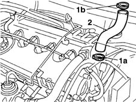

1080D14 pipe from engine oil vapour separator to intake - r + r
- Path
- Procedures > 10 ENGINE UNIT > 1080 EXHAUST EMISSION CONTROL SYSTEM > 1080D crankcase vapour/gas recirculation system > 1080D14 pipe from engine oil vapour separator to intake - r + r
- Kind
- repair procedure (removal / refitting; the operation number is the code)
- Applies to
- engines: 1.9 JTD 8V; all production periods
- Interactive page
- https://sloeber94.github.io/elrnDB-fMltpl/en/#/2891438
Applies to: engines: 1.9 JTD 8V; all production periods
 Removing
Removing
 Refitting
RefittingOpen the bonnet lid.
1048A10 AIR CLEANER FILTERING ELEMENT - REPLACE
1016A10 sound-proofing cover - r + r
1. Disconnect the pipe by breaking clamp (1a) connecting it to the turbo air inlet and clamp (1b) connecting it to the engine oil vapour separator.
2. Remove the pipe connecting the vapour separator to the intake.

Applies to: engines: 1.9 JTD 8V; all production periods
Refitting
RemovingFit a new pipe connecting the vapour separator to the intake.
Connect the pipe to the vapour separator and to the turbo air intake.
Secure the pipe using new clamps.